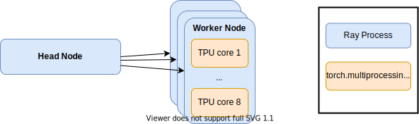

Pytorch Hyperparameter Optimization on TPUs
Making Pytorch-XLA play nice with Ray Tune
So, you finally got access to those sweet free TPUs through Google’s TRC program and want to make good use of it? Then you’ve come to the right place. In this post, we will go over how to efficiently distribute hyperparameter optimization of a Pytorch model across multiple TPUs using Ray tune. More specifically, we will tune a Pytorch model from the fantastic 🤗-transformer library.
Thanks to Google’s TPU Research Cloud program for providing free access to cutting-edge TPUs. For the full code, go to https://github.com/dsuess/transformers-mup/tree/ray-on-tpu.
Introduction
Originally, this post started out with me wanting to try Maximal Update Parmemetrization (μP) on 🤗-transformers. μP are a special parameterization of trainable parameters in Deep Neural Networks. Models in μP have the nice property that their optimal hyperparameters are stable across different network sizes:
In other words, we can use a small model-variant to find hyperparameters, which are nearly optimal for all model sizes. As a result, we do not have to perform hyperparameter optimization separately on the larger model-variants, and hence, we can train large models nearly optimally for a fraction of the compute cost.
The goal was to run these experiments using TPUs from Google’s TPU Research Cloud program, which provides free access to multiple v2-8 and v3-8 TPUs. These are single-node instances with 8 TPU cores each, which makes them fast enough to train smaller model variants.
The good news is that 🤗-transformers comes with support for hyperparameter optimization out of the box. Using Ray tune, we can easily scale the hyperparameter search across many nodes when using GPUs. For reasons that we will outline below, out-of-the-box support for TPUs in Ray is currently limited: We can either run on multiple nodes, but with the limit of only utilizing a single TPU-core per node. Alternatively, if we want to use all 8 TPU cores on a node, we are limited to a single instance
This post explains how to get around this limitation and unlock the full power of TPUs for hyperparameter optimization in Ray tune when using Pytorch.
Hyperparamer Search
Hyperparameters are parameters of a deep learning model that are not tuned by gradient descent, e.g. learning rate, weight decay, or the number of layers in the architecture.
The standard approach to pick a good set of hyperparameters is through hyperparameter optimization, which requires training multiple models, each with a different set of hyperparameters, in order to select the one with the best performance. On the one hand, the large number of trials required makes hyperparameter optimization computationally costly. On the other hand, multiple trials can be evaluated in parallel without the need of communication while training. This makes it feasible, and often necessary, to run the workload on multiple nodes in parallel.
This is where Ray Tune shines: It is a library for distributed hyperparameter optimization build on top of Ray. With only a few lines of code, we can can implement state-of-the-art hyperparameter optimization techniques. All we need to do is define the search space of hyperparameters and a function that registers the metrics for our model (see the github repo for the actual implementation):
import ray.tune as rt
def run_train(config: Dict):
...
for epoch in config["num_train_epochs"]:
...
rt.report(eval_loss=...)
search_space = {
"learning_rate": rt.loguniform(1e-6, 1e-2),
"warmup_ratio": rt.uniform(0, 0.1),
"num_train_epochs": rt.uniform(20, 50),
}
train_fun = ft.partial(run_train, ...)
analysis = rt.run(
train_fun,
config=search_space,
time_budget_s=60 * 60,
search_alg=HyperOptSearch(metric="eval_loss", mode="min"),
scheduler=ASHAScheduler(metric="eval_loss", mode="min"),
...
)
The same code can now run either on your local machine or on a Ray cluster. For example, the cluster we will run on consists of a light-weight head node to manage the cluster and three TPU v2-8 nodes. If it was not for the limited availability of TPU nodes, we could easily scale this implementation to few 10s or 100s of workers.
P for Power
The other key in making hyperparameter search for deep learning models fast is to distribute the training in each trial across multiple accelerators (i.e. GPUs or TPUs). For multi-GPU training, Ray tune nicely integrates with the both pytorch’s DataParallel and DistributedDataParallel. The latter can be significantly faster, even for single-node training, as it runs a separate process for each GPU.
The same is true when running on TPU nodes: Each node has 8 separate TPU cores and each core requires a seprate Python process to run. However, launching the necessary processes requires additional bookkeeping and should be done directly through PyTorch XLA, the library that enables using TPUs in PyTorch. Therefore, we cannot simply re-use the existing DistributedDataParallel wrapper provided by Ray tune.
Instead, we will manually need to launch the TPU-core worker processes on each Ray worker node using Pytorch XLA’s multiprocessing module:

The remaining challenge is how to return the model’s validation scores back to Ray tune. Ideally, we report the scores back after each epoch. This way we can make use of early stopping and terminate unfavourable trials early on. Since the scores are computed in the TPU-worker processes, but reporting to Ray-tune needs to happen from the Ray-worker process, we use a simple Queue to push results from the former to the latter (full implementation):
def _handle_distributed(config: Dict[str, Any]):
import torch_xla.distributed.xla_multiprocessing as xmp
mp.set_start_method("spawn")
queue = mp.Queue()
context = xmp.spawn(_launch_mp, args=(config, 8, queue), nprocs=8, join=False)
Ray-tune launches this function on each Ray-worker node with different hyperparameter-values in config.
Then in turn, the last line launches 8 worker processes on each node – one for each TPU core – with the entrypoint _launch_mp, which contains the whole training logic.
We set join=False so the Ray-worker node can continue running and process messages sent by the TPU-workers through queue:
try:
while True:
if not all(p.is_alive() for p in context.processes):
break
try:
res = queue.get(block=True, timeout=1)
except Empty:
pass
else:
if isinstance(res, dict):
rt.report(**res)
else:
raise NotImplementedError(f"No idea how to handle {res}")
finally:
queue.close()
context.join()
As already mentioned above, the function _launch_mp contains the whole training logic, which in this case is a slightly modified 🤗-transformers example1:
def _launch_mp(
idx: int, config: Dict[str, Any], num_cores: int = 1, result_queue: Queue = None
):
tokenizer = AutoTokenizer.from_pretrained("sgugger/gpt2-like-tokenizer")
block_size = tokenizer.model_max_length
def tokenize_fn(data):
return tokenizer(data["text"])
def group_texts(examples):
concatenated = {k: sum(examples[k], []) for k in examples}
key, *_ = examples.keys()
total = (len(concatenated[key]) // block_size) * block_size
result = {
k: [t[i : i + block_size] for i in range(0, total, block_size)]
for k, t in concatenated.items()
}
result["labels"] = result["input_ids"].copy()
return result
model_config = AutoConfig.from_pretrained("gpt2")
model = AutoModelForCausalLM.from_config(model_config)
lm_datasets = (
load_dataset("wikitext", "wikitext-2-raw-v1")
.map(tokenize_fn, batched=True, num_proc=4, remove_columns=["text"])
.map(group_texts, batched=True, batch_size=512, num_proc=4)
)
training_args = TrainingArguments(
output_dir=f"gpt2-wikitext2",
evaluation_strategy="epoch",
learning_rate=config.get("learning_rate", 2e-5),
warmup_ratio=config.get("warmup_ratio", 0),
weight_decay=config.get("weight_decay", 0),
num_train_epochs=config.get("num_train_epochs", 2),
per_device_train_batch_size=4,
per_device_eval_batch_size=4,
gradient_accumulation_steps=config.get("gradient_accumulation_steps", 1),
eval_accumulation_steps=config.get("gradient_accumulation_steps", 1),
push_to_hub=False,
save_strategy="no",
tpu_num_cores=num_cores,
)
callbacks: List[TrainerCallback] = []
if idx == 0 and result_queue is not None:
callbacks.append(TuneReporterCallback(result_queue))
trainer = Trainer(
model=model,
args=training_args,
train_dataset=lm_datasets["train"],
eval_dataset=lm_datasets["validation"],
callbacks=callbacks,
)
trainer.train()
The main diffference here is that we set the tpu_num_cores argument in TrainerArguments and register a custom TuneReporterCallback.
The latter uses the result queue shared between the parent and all workers processes to report the results of evaluation:
from transformers.trainer_callback import TrainerCallback, TrainerState
class TuneReporterCallback(TrainerCallback):
def __init__(self, result_queue: Queue):
self.result_queue = result_queue
def on_evaluate(self, args, state: TrainerState, control, **kwargs):
self.result_queue.put(state.log_history[-1])
To make sure we do not record metrics multiple times, the callback is only registered on the 0th TPU worker node with idx==0.
Running
The code can run both on a single TPU VM or distributed on a Ray cluster.
For the former, simply start a TPU VM with the tpu-vm-pt-1.10 base image, install the dependencies in requirements.txt, and run
$ python3 run.py tune
To run it on an existing Ray cluster, simply pass its IP via the --address parameter2.
Using the provided cluster configuration with three worker nodes, the output of the run.py script will look something like this after a while:
Number of trials: 9/infinite (1 PENDING, 3 RUNNING, 5 TERMINATED)
+------------------+------------+----------------------+-----------------+--------+-------------+
| Trial name | status | loc | learning_rate | iter | eval_loss |
|------------------+------------+----------------------+-----------------+--------+-------------+
| DEFAULT_700ebfd4 | RUNNING | 10.128.15.216:295419 | 0.001869 | 19 | 5.73066 |
| DEFAULT_92adfe30 | RUNNING | 10.128.15.210:496115 | 0.00258847 | 1 | 7.1485 |
| DEFAULT_0f17d982 | RUNNING | 10.128.15.217:378231 | 0.000924847 | | |
| DEFAULT_21656a3c | PENDING | | 1.52227e-05 | | |
| DEFAULT_4ddb65bc | TERMINATED | 10.128.15.210:7846 | 3.73523e-06 | 43 | 7.2199 |
| DEFAULT_4eb638e0 | TERMINATED | 10.128.15.216:8352 | 7.79511e-06 | 30 | 7.09317 |
| DEFAULT_060b8f5e | TERMINATED | 10.128.15.217:7332 | 0.000317765 | 40 | 5.20176 |
| DEFAULT_c231fb58 | TERMINATED | 10.128.15.210:396501 | 4.85264e-05 | 1 | 9.42292 |
| DEFAULT_0f59cdfc | TERMINATED | 10.128.15.210:446377 | 4.47327e-05 | 1 | 9.45109 |
+------------------+------------+----------------------+-----------------+--------+-------------+
The first three lines show the running trials, which demonstrates that all three workers are properly utilized. Additionally, the trials in the last two lines were terminated by Ray tune’s early stopping algorithm, which shows that the TPU workers can be killed safely.
Conclusion
This post went over the steps necessary for getting pytorch’s TPU support to work seamlessly in Ray tune. We are now able to run hyperparameter optimization in paralllel on multiple TPU nodes while also making full use of the accelerators. Since Ray does not support TPU pods – collections of multiple TPU nodes for distributed multi-node training – we are currently restricted to v2-8 and v3-8 TPU instances, and hence, smaller models. Nevertheless, with Ray tune, we can easily run the trials for hyperparameter optimization on as many TPU nodes as we have access to (or as many as we are willing to pay for).
-
To use this code with any custom Pytorch model, only the _lauch_mp function would need to be modified. ↩
-
For full instructions see the readme. If you are enrolled into TRC, make sure to adapt the region and project settings in cluster.yaml to use TPUs from the free quota. Running multiple TPU nodes can become expensive very quickly. ↩